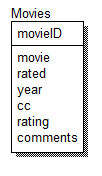

The purpose of Assignment 6 is to familiarize us with PHP and SQL to run queries to manage a database.
We are to read from w3schools on PHP, then read tizag on SQL, and on MySQL. After reading we are to create
an assignment that will select, insert, delete, and update a table that we have created from scratch. Also
create an entity relationship diagram which is outlines below.
Reflection: This was another pretty hard assignment but really cool to implement SQL commands through
programming. I had a bunch of issue with the only to find out I had too many in my code so it made
everything inside act up. The second I figured it out and I had spent so much time on it I flew through
the rest of the assignment. According to tizag on SQL injection I just need to use the
mysql_real_escape_string which I throw everything into it and assign it back to itself to prevent attacks.
The command looks at what is being added and checks for nefarious attacks and adds escape characters if
they look like possibilities to the data to prevent an injection. I did notice that html code messes with
the display of the tables still but the database itself is not impacted at all. There are many other
things to do like error checking of fields that could have been implemented but as always time is an issue.
Overall great assignment!
ER-Diagram of database
- Read w3schools on PHP
- Read tizag on SQL and mySQL
- Create a program that will select, insert, delete, and update a database